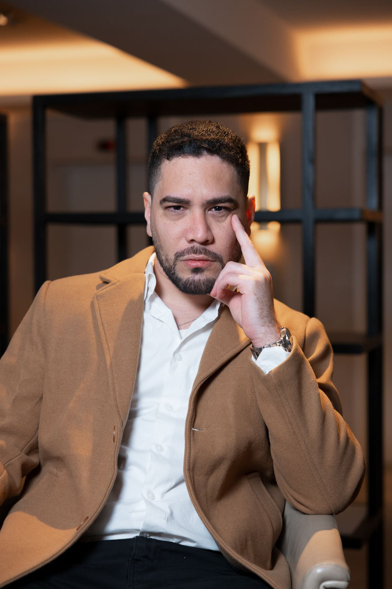

José Manuel Simons
Venezolano. Me formé en Derecho en Caracas, viví siete años en Santiago y hoy escribo desde Punta Arenas. Fundé Caribe Austral y dirijo Anteros Legal.
«Vine de Venezuela. No huí: decidí. Esa diferencia es de lo que trata este proyecto.»

El recorrido
10°30′N
Caracas
Estudié Derecho en la Universidad Católica Andrés Bello. Entre 2013 y 2020 fui director jurídico de Venezuela Igualitaria. Ahí co-redacté el proyecto de ley de matrimonio civil igualitario que llegó a la Asamblea Nacional en 2014 y litigué ante la Sala Constitucional.
En 2016, un amparo que presenté terminó en la sentencia 1187, que reconoció a un niño como hijo de sus dos madres. Fue derecho constitucional de trinchera, con pocos recursos y mucha claridad sobre lo que estaba en juego.
33°27′S
Santiago
Llegué a Chile en noviembre de 2016. Santiago fue mi ciudad escuela: trabajos de lo que fuera, volver a estudiar, organizaciones y charlas, el estallido y la pandemia.
En 2019 cofundé Migración Diversa, que acompaña a personas migrantes LGBTIQ+. En esos años nacieron también Anteros Legal y la marca que hoy es Caribe Austral.
53°10′S
Punta Arenas
En el sur hice el Magíster en Gobierno y Dirección Pública de la Universidad Autónoma de Chile, con beca de la Fundación Konrad Adenauer. Mi tesis mira el futuro de la gobernanza antártica hacia 2048, y la presenté en las VIII Jornadas Chilenas de Derecho Antártico.
Desde aquí escribo columnas, doy clases y charlas, y acompaño a personas que quieren que su historia trabaje a su favor. El Caribe me enseñó el fuego. La Patagonia me enseñó a dónde dirigirlo.
Algunas cosas que hice
Proyecto de ley de matrimonio civil igualitario, presentado ante la Asamblea Nacional de Venezuela con firmas de todo el país.
Sentencia 1187 de la Sala Constitucional: un niño reconocido como hijo de sus dos madres.
Editorial cartonera La Maricartonera. Presentamos Corazón delineado en la Biblioteca de Santiago.
Cofundador de Migración Diversa, en Santiago.
Ponencia «2048 no es una fecha de vencimiento» en las VIII Jornadas Chilenas de Derecho Antártico, Universidad de Chile.
Columnas sobre ciudad, migración y liderazgo desde Magallanes.
Mi trabajo ha aparecido en The Clinic, El Nacional, Caracas Chronicles, Latino USA, Cooperativa y La Prensa Austral.
Formación
- Magíster en Gobierno y Dirección PúblicaUniversidad Autónoma de Chile, con beca de la Fundación Konrad Adenauer
- Pedagogía con PropósitoHarvard Business School, con beca de Banco Santander, 2023
- Especialización en Derechos HumanosUniversidad Autónoma de Chile
- Especialización en Derecho LaboralUniversidad Central de Venezuela
- DerechoUniversidad Católica Andrés Bello, Caracas, 2008–2013
- IdiomasEspañol e inglés. Francés de trabajo y alemán básico.